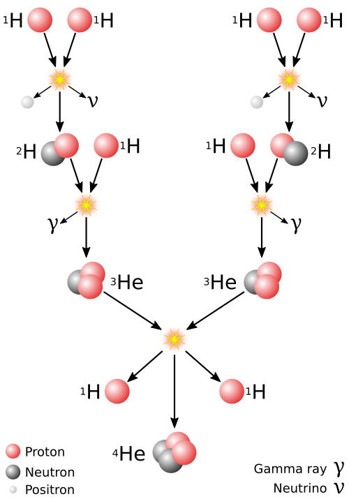

| Symbol | Names | Adjectives | Sun [1] ,sol,helios [1] | Solar [3] |
From Wikipedia, the free encyclopedia
The Sun is the a star at the centre of the Solar System. It is a massive, nearly perfect sphere of hot plasma , heated to incandescence by nuclear fusion reactions in its core, radiating the energy from its surface mainly as visible light and infrared radiation with 10% at ultraviolet energies. It is by far the most important source of energy for life on Earth. The Sun has been an object of veneration in many cultures. It has been a central subject for astronomical research since antiquity. The Sun orbits the Galactic Center at a distance of 24,000 to 28,000 light-years. Its distance from Earth defines the astronomical unit, which is about 1.496×108 kilometres or about 8 light-minutes. Its diameter is about 1,391,400 km (864,600 mi), 109 times that of Earth. The Sun's mass is about 330,000 times that of Earth, making up about 99.86% of the total mass of the Solar System. The mass of outer layer of the Sun's atmosphere, its photosphere, consists mostly of hydrogen (~73%) and helium (~25%), with much smaller quantities of heavier elements, including oxygen, carbon, neon, and iron. The Sun is a G-type main-sequence star (G2V), informally called a yellow dwarf, though its light is actually white. It formed approximately 4.6 billion[a] years ago from the gravitational collapse of matter within a region of a large molecular cloud. Most of this matter gathered in the centre; the rest flattened into an orbiting disk that became the Solar System. The central mass became so hot and dense that it eventually initiated nuclear fusion in its core. Every second, the Sun's core fuses about 600 billion kilograms (kg) of hydrogen into helium and converts 4 billion kg of matter into energy. About 4 to 7 billion years from now, when hydrogen fusion in the Sun core diminishes to the point where the Sun is no longer in hydrostatic equilibrium, its core will undergo a marked increase in density and temperature which will cause its outer layers to expand, eventually transforming the Sun into a red giant. After the red giant phase, models suggest the Sun will shed its outer layers and become a dense type of cooling star (a white dwarf), and no longer produce energy by fusion, but will still glow and give off heat from its previous fusion for perhaps trillions of years. After that, it is theorised to become a super dense black dwarf, giving off negligible energy.
The core is the only region of the Sun that produces an appreciable amount of thermal energy through fusion; 99% of the Sun's power is generated in the innermost 24% of its radius, and almost no fusion occurs beyond 30% of the radius. The rest of the Sun is heated by this energy as it is transferred outward through many successive layers, finally to the solar photosphere where it escapes into space through radiation (photons) or advection (massive particles). [66][67]
The proton–proton chain occurs around 9.2×1037 times each second in the core, converting about 3.7×1038 protons into alpha particles (helium nuclei) every second (out of a total of ~8.9×1056 free protons in the Sun), or about 6.2×1011 kg/s. However, each proton (on average) takes around 9 billion years to fuse with another using the PP chain.[66] Fusing four free protons (hydrogen nuclei) into a single alpha particle (helium nucleus) releases around 0.7% of the fused mass as energy,[68] so the Sun releases energy at the mass–energy conversion rate of 4.26 billion kg/s (which requires 600 billion kg of hydrogen[69]), for 384.6 yottawatts (3.846×1026 W),[5] or 9.192×1010 megatons of TNT per second. The large power output of the Sun is mainly due to the huge size and density of its core (compared to Earth and objects on Earth), with only a fairly small amount of power being generated per cubic metre. Theoretical models of the Sun's interior indicate a maximum power density, or energy production, of approximately 276.5 watts per cubic metre at the centre of the core,[70] which, according to Karl Kruszelnicki, is about the same power density inside a compost pile.[71] The fusion rate in the core is in a self-correcting equilibrium: a slightly higher rate of fusion would cause the core to heat up more and expand slightly against the weight of the outer layers, reducing the density and hence the fusion rate and correcting the perturbation; and a slightly lower rate would cause the core to cool and shrink slightly, increasing the density and increasing the fusion rate and again reverting it to its present rate. [72][73]
The core of the Sun is considered to extend from the center to about 0.2 of the solar radius (139,000 km; 86,000 mi).[1] It is the hottest part of the Sun and of the Solar System. It has a density of 150,000 kg/m3 (150 g/cm3) at the center, and a temperature of 15 million kelvins (15 million degrees Celsius; 27 million degrees Fahrenheit).[2] The core is made of hot, dense plasma (ions and electrons), at a pressure estimated at 26.5 million gigapascals (3.84×1012 psi) at the center.[3] Due to fusion, the composition of the solar plasma drops from about 70% hydrogen by mass at the outer core, to 34% hydrogen at the center.[4] The core contains 34% of the Sun's mass, but only 3% of the Sun's volume, and it generates 99% of the fusion power of the Sun. There are two distinct reactions in which four hydrogen nuclei may eventually result in one helium nucleus: the proton–proton chain reaction – which is responsible for most of the Sun's released energy – and the CNO cycle.
{kind=link}